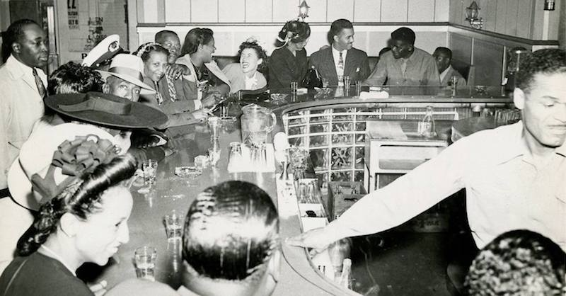
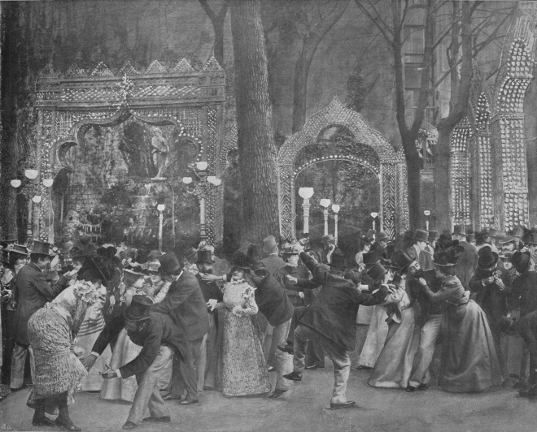

Some Background Information on Nightlife
Today the term nightlife typically refers to social activities in urban commercial spaces—particularly drinking, dancing, dining, and listening to live musical performances. This was not always so. Cities in the 18th and early 19th centuries knew relatively limited nightlife, most of it occurring in drinking places for men. Theater attracted mixed-gender audiences but was sometimes seen as disreputable in both its content and the character of the audience. Theater owners worked to shed this negative reputation starting in the mid-19th century, while nightlife continued to be tainted by the profusion of saloons, brothels, and gambling halls. Gradual improvements in street lighting and police protection encouraged people to go out at night, as did growing incomes and decreasing hours of labor. Nightlife attracted more women in the decades around 1900 as it expanded and diversified. Dance halls, vaudeville houses, movie theaters, restaurants, and cabarets thrived in the electrified “bright lights” districts of central cities. Commercial entertainment contracted again in the 1950s and 1960s as Americans spent more of their evening leisure hours watching television and began to regard urban public spaces with suspicion. Still, nightlife is viewed as an important component of urban economic life and is actively promoted by many municipal governments.
 